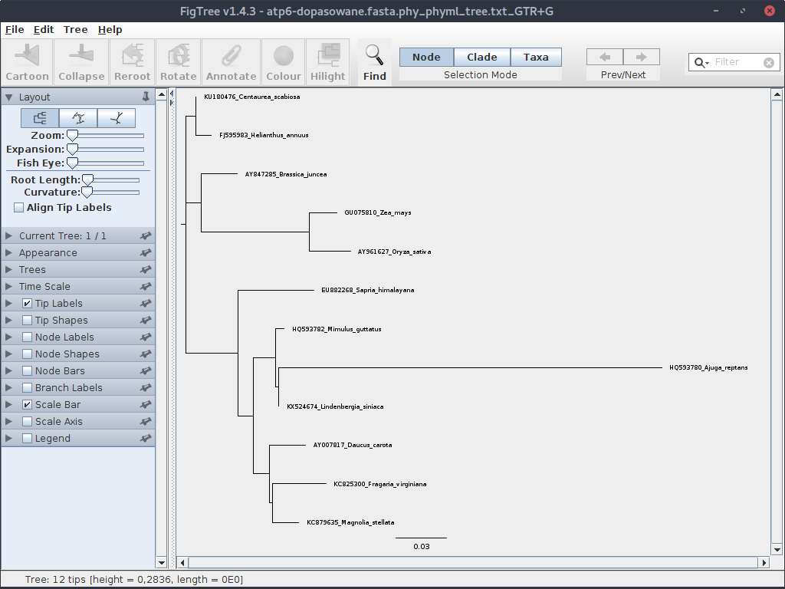
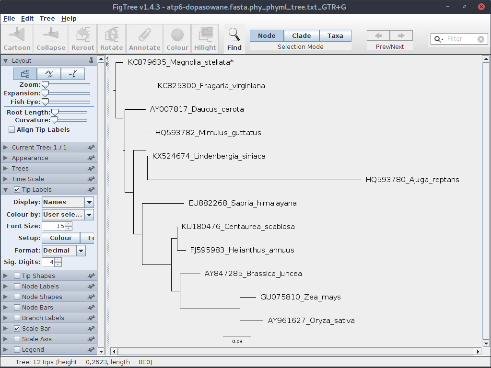
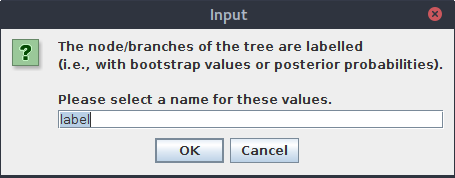
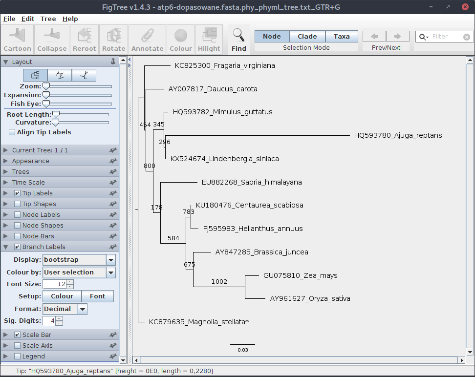
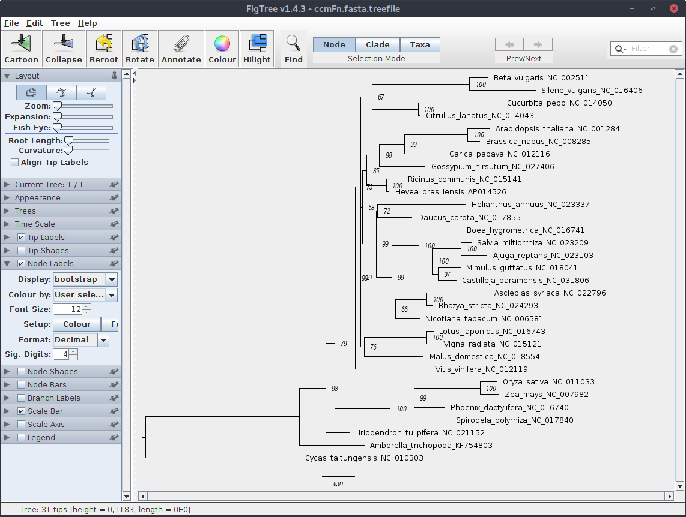
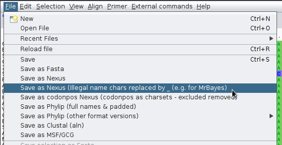
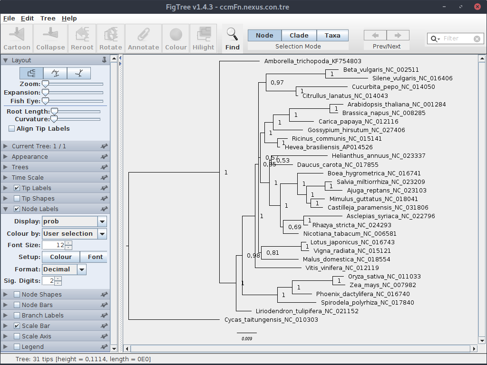

Konstruowanie drzew filogenetycznych
Generowanie drzew metodą Maximum Likelihood za pomocą programu phyml
Jednym z popularnych programów liczących drzewa filogenetyczne z użyciem algorytmu Maximum Likelihood jest phyml.
Utwórz katalog phyml, następnie wejdź do niego i skopiuj tam plik atp6-dopasowane.fasta.
W poprzedniej części pokazałem jak dopasować model ewolucji molekularnej dla zestawu sekwencji przy użyciu programu JModelTest 2:
java -jar ~/jmodeltest/jModelTest.jar -d atp6-dopasowane.fasta -g 4 -i -f -AIC -BIC -s 11 -o atp6-jmodeltest-results.txt
Wspomniałem też, że w pliku wynikowym można łatwo znaleźć parametry dla programu phyml:
$: grep phyml atp6-jmodeltest-results.txt
Phyml path = /home/grzeg/jmodeltest/exe/phyml/
phyml -i /tmp/jmodeltest9047391708413796278.phy -d nt -n 1 -b 0 --run_id GTR+G -m 012345 -f m -c 4 -a e --no_memory_check -o tlr -s BEST
phyml -i /tmp/jmodeltest9047391708413796278.phy -d nt -n 1 -b 0 --run_id TIM1+G -m 012230 -f m -c 4 -a e --no_memory_check -o tlr -s BEST
Jeden z nich jest zestawem dla kryterium AIC, drugi dla BIC. Użycie polecenia grep z parametrem -B (jak Before), które pokazuje także linie poprzedzające linię z dopasowaniem szukanego ciągu znaków pozwala zidentyfikować, który jest który (nawiasem mówiąc jest też parametr -A od After):
$: grep phyml -B 2 atp6-jmodeltest-results.txt
Phyml version = 20130103
Phyml binary = PhyML_3.0_linux64
Phyml path = /home/grzeg/jmodeltest/exe/phyml/
--
* AIC MODEL SELECTION : Best Model's command line
phyml -i /tmp/jmodeltest9047391708413796278.phy -d nt -n 1 -b 0 --run_id GTR+G -m 012345 -f m -c 4 -a e --no_memory_check -o tlr -s BEST
--
* BIC MODEL SELECTION : Best Model's command line
phyml -i /tmp/jmodeltest9047391708413796278.phy -d nt -n 1 -b 0 --run_id TIM1+G -m 012230 -f m -c 4 -a e --no_memory_check -o tlr -s BEST
Skupmy się na wyniku dla AIC. Używając zainstalowanego manuala (man phyml) sprawdź co oznaczają poszczególne opcje.
Kilka z nich zmodyfikujemy. Zaczniemy od pliku z sekwencjami. Powyższy wynik wskazuje na plik phy w katalogu tymczasowym, możesz sprawdzić czy istnieje. Jeśli tak to można go wykorzystać do dalszej pracy, ale zrobimy inaczej.
Najpierw stworzymy (zgodnie z instrukcją z poprzedniej części) plik w formacie PHYLIP:
java -jar ~/jmodeltest/jModelTest.jar -d atp6-dopasowane.fasta -getPhylip
W katalogu pojawił się plik atp6-dopasowane.fasta.phy. To jego użyjemy jako pliku wejściowego. Zmodyfikuj zatem komendę i wykonaj ją:
phyml -i atp6-dopasowane.fasta.phy -d nt -n 1 -b 0 --run_id GTR+G -m 012345 -f m -c 4 -a e --no_memory_check -o tlr -s BEST
W katalogu pojawiły się dwa nowe pliki:
atp6-dopasowane.fasta.phy_phyml_stats.txt_GTR+G
atp6-dopasowane.fasta.phy_phyml_tree.txt_GTR+G
Sprawdź ich zawartość. Jak widać, drugi z nich (jak zresztą wskazuje nazwa) zawiera drzewo zapisane w formacie Newick.
Teraz sprawdźmy jak to drzewo może wyglądać. Użyjemy do tego celu programu FigTree. Po jego uruchomieniu, otwórz plik z drzewem.

Drzewo nie wygląda zbyt pięknie, ale kwestiami wizualnymi zajmiemy się kiedy indziej. Drzewo, które się wyświetliło wyraźnie nie jest ukorzenione.
Można to zmienić, zaznaczając (klikając) gałąź z grupą zewnętrzną (outgrupą) i klikając odpowiednią ikonę (,,Reroot''). Grupą zewnętrzna w naszym zestawie jest Magnolia stellata.
Jednak spróbujemy to zrobić inaczej, tak aby phyml od razu wygenerował ukorzenione drzewo. Otwórz plik *.phy w ulubionym edytorze tekstu i dodaj gwiazdkę na końcu nazwy sekwencji z outgrupą, usuń przy tym nadmiarową spację tak aby sekwencje były wyrównane:
...
KU180476_Centaurea_scabiosa TCCTACTTCT GATTCATTTT GTTACTAAAA AAGGAGGAGG AAACTTAGTA
AY007817_Daucus_carota TCCTACTTTT GGTTCATTTT GTTACTAAAA ACGGAGGAGG AAACTCAGTA
KC879635_Magnolia_stellata* TCCTACTTCT GGTTCATTTT GTTACTAAAA ACGGAGGGGG AAACTCAGTA
HQ593782_Mimulus_guttatus TCCTACTTTT TGTTCATTTT GTTACTAAAA AGGGAGGAGG AAACTCAGTA
KX524674_Lindenbergia_siniaca TCCTACTTTT TGTTCATTTT GTTACTAAAA AGGGAGGAGG AAACTCAGTA
...
Ponownie wygeneruj drzewo i otwórz w FigTree. Przy okazji w rozwijanym menu po lewej możesz zwiększyć czcionkę dla tekstu opisującego liście:

Zauważ, że teraz drzewo jest ukorzenione.
Naszemu drzewu brakuje jednak jeszcze jednego elementu - bootstrapu. Zmieniamy więc opcje w poleceniu, ustawiając wartość parametru -b na 1000:
phyml -i atp6-dopasowane.fasta.phy -d nt -n 1 -b 1000 --run_id GTR+G -m 012345 -f m -c 4 -a e --no_memory_check -o tlr -s BEST
To chwilę potrwa. Jeśli masz powolny komputer, dla celów testowych możesz ustawić mniejszą wartość, np. 100.
Ponownie otwórz plik wynikowy w programie FigTree. Tym razem pojawi się okienko, w którym możemy wpisać nazwę wartości:

Wpisz bootstrap.
Jeśli drzewo nie jest prawidłowo ukorzenione, czyli Magnolia stellata nie stanowi wyraźnej grupy zewnętrznej, to je ukorzeń. Ustaw odpowiednią wielkość czcionki, a następnie zaznacz i otwórz zakładkę ,,Branch Label'' i ustaw parametry wyświetlania bootstrapu.

Wartości bootstrap generowane przez phyml przedstawiają liczbę wygenerowanych drzew na których występuje dana gałąź. Przy czym, jak widać, choć podaliśmy 1000 jako liczbę powtórzeń, w sumie było ich 1002, ponieważ program dostosowuje tą wartość do liczby używanych procesorów/rdzeni/wątków. W tym przypadku było ich 3, więc liczba powtórzeń musiała być podzielna przez 3.
Zwykle wartości bootstrapu nie przestawia się jako wartości bezwzględnych ale raczej jako wartość procentową (bez znaku %). Toteż należałoby je poprawić w pliku z zapisanym drzewem, albo później poprawiając plik graficzny.
Generowanie drzew metodą Maximum Likelihood za pomocą programu IQ-TREE
Innym programem wykorzystującym metodę ,,Maximum Likelihood'' do generowania drzew filogenetycznych jest IQ-TREE, z którym zetknęliśmy się w poprzednim rozdziale. Na stronie domowej programu, pod adresem http://www.iqtree.org, można znaleźć m. in. pliki instalacyjne dla różnych systemów operacyjnych a także dokumentację.
Pod Debianem i pokrewnymi dystrybucjami Linuksa można zainstalować go poleceniem:
sudo apt-get install iqtree
Jedną z zalet IQ-TREE jest to, że automatycznie dobiera dobiera model ewolucji molekularnej, który jest następnie używany przy generowaniu drzew filogenetycznych. Ponadto można zastosować ultraszybki bootstrap (ultrafast bootstrap), który jak nazwa wskazuje, znacznie przyspiesza etap oceny wiarygodności wyników.
Pobierz zestaw sekwencji: http://ggoralski.pl/files/filogenetyka-data/ccmFn.fasta
Teraz utwórz katalog, np. o nazwie iqtree, umieść tam plik z sekwencjami. W katalogu wykonaj komendę:
iqtree -s ccmFn.fasta -m TEST -nt AUTO -bb 1000 -o Cycas_taitungensis_NC_010303
Znaczenie parametrów jest takie:
-s ccmFn.fasta- plik wejściowy-m TEST- należy znaleźć model substytucji-nt AUTO- automatyczne dopasowanie liczby rdzeni procesora do obliczeń-bb 1000- ultraszybki bootstrap, 1000 powtórzeń-o Cycas_taitungensis_NC_010303- outgrupa: podajemy nazwę sekwencji z plikuFASTA
Obserwuj komunikaty, które pokazują się w trakcie obliczeń. Jak widać w początkowej fazie program wyszukuje model ewolucji molekularnej wg. trzech kryteriów, a następnie do dalszych analiz wybrany ten, który został dopasowany wg. kryterium BIC (co można oczywiście zmienić). W końcu zostaje wygenerowanych kilka plików z wynikami, najbardziej nas będzie interesował ccmFn.fasta.treefile, w którym zapisane jest drzewo. Z kolei w pliku ccmFn.fasta.log zapisane zostają komunikaty wyświetlane przez program.
Po otwarciu pliku z drzewem w programie FigTree, ręcznemu wskazaniu outgrupy (Cycas) i dopasowaniu wyglądu powinien pokazać się mniej więcej taki widok:

Program IQ-TREE posiada wiele dodatkowych opcji i możliwości dopasowania parametrów obliczeń dla drzewa. Warto zajrzeć do dokumentacji i tutoriala dostępnego na stronie domowej programu.
Szybkie drzewo - FastTree
Kolejnym programem służącym do generowania drzew metodą Maximum Likelihood jest FastTree. Nie jest to program posiadający zbyt wiele opcji, ma natomiast niewątpliwą zaletę - jak sama nazwa wskazuje generuje drzewa szybko. Warto go wykorzystać szczególnie gdy generujemy wiele drzew, które mają raczej wstępny charakter.
Przykładowe uruchomienie programu może wyglądać tak:
fasttree -nt -gtr atp6.fasta > atp6.tree
Opcja -nt oznacza, że mamy do czynienia z plikiem zawierającym nukleotydy, -gtr że używamy modelu GTR.
Do oceny wiarygodności program używa test Shimodaira-Hasegawa, którego nie omawialiśmy.
Generowanie drzew metodą bayesowską - MrBayes
MrBayes jest jednym z programów pozwalających na wygenerowanie drzew filogenetycznych metodą bayesowską. O ile metoda Maximum Likelihood wyszukuje drzewa, dla którego dane są najbardziej prawdopodobne, to metoda bayesowska wyszukuje najbardziej prawdopodobne drzewo dla bieżącego zestawu sekwencji. Sposób szukania takiego drzewa przypomina nieco proces ewolucji. Wygenerowane losowo drzewa w każdym ,,pokoleniu'' zmieniają się (,,mutują''), co oznacza zmianę ich parametrów. Zmiany które zwiększają ich prawdopodobieństwo są akceptowane, te które je zmniejszają zostają na ogół odrzucane, choć czasem (w sposób losowy) są również akceptowane, co pomaga uniknąć wpadnięcia drzewa w ,,lokalne optimum''. Domyślnie prowadzone są obliczenia dla dwóch drzew, które są porównywane ze sobą. Obliczenia kończą się, automatycznie lub decyzją użytkownika (parametr stoprule) kiedy różnice między nimi spadną poniżej określonego poziomu (parametr stopval) albo zostanie przekroczona ustawione liczna pokoleń (parametr ngen).
MrBayes umożliwia pracę w dwu trybach - obu tekstowych. W pierwszym uruchamiamy program (polecenie mb) a następnie wprowadzamy kolejno komendy i ustawiamy parametry obliczeń. W drugim trybie przygotowujemy wszystko w odpowiednio sformatowanych plikach, które program odczytuje i uruchamia proces generowania drzewa. Przyjrzymy się drugiej metodzie.
Jak zwykle, warto zajrzeć na stronę domową programu: http://mrbayes.sourceforge.net gdzie znajdziemy m. in. manual.
Instalacja pod Debianem (i dystrybucjach pokrewnych) przebiega standardowo:
sudo apt-get install mrbayes
Utwórz katalog, np. o nazwie mrbayes. Skopiuj do niego plik z sekwencjami ccmFn.fasta
Najpierw znajdziemy model substytucji spośród obsługiwanych przez program mrbayes, użyjemy w tym celu IQ-TREE (zob. poprzedni rozdział).
iqtree -m TESTONLY -nt AUTO -mset mrbayes -s ccmFn.fasta
W wynikach znajdujemy dopasowany model: GTR+F+G4 czyli GTR + gamma.
Teraz należy przekonwertować plik z formatu FASTA do formatu Nexus. Można do tego wykorzystać program AliView. Otwórz w nim plik ccmFn.fasta, następnie wybierz z menu File->Save as Nexus. Należy pamiętać, że mrBayes jest wrażliwy na ,,niewłaściwe'' znaki znajdujące się w opisach sekwencji co może prowadzić do błędów po uruchomieniu obliczeń. Zatem jeśli nie ma pewności, że używamy wyłącznie dozwolonych znaków, lepiej wybrać przy eksporcie opcję Save as Nexus (illegal name chars replaced by _ (e.g. for MrBayes).

Plik zapisz jako ccmFn.nexus, otwórz go w edytorze tekstu, zobacz jak zapisane są w nim dane.
Następnie przygotuj plik mrBayes.bay o treści:
begin mrbayes;
execute ccmFn.nexus;
outgroup Cycas_taitungensis_NC_010303;
lset applyto=(all) nst=6 rates=gamma;
mcmcp ngen=1000000;
mcmcp stoprule = yes;
mcmcp stopval = 0.01;
mcmcp savebrlens=yes;
mcmc;
sumt;
end;
Jest to proste ustawienie komend i parametrów dla programu.
Uruchom obliczenia:
$: mb mrBayes.bay
Obliczenia chwilę potrwają. Podczas działania programu przyjrzyjmy się znaczeniu użytych poleceń nie zagłębiając się jednak w szczegóły.
execute ccmFn.nexus- wczytanie pliku z sekwencjamioutgroup Cycas_taitungensis_NC_010303- wskazanie outgrupylset applyto=(all) nst=6 rates=gamma- ustawienie modelu substytucjiGTR+G+Imcmcp ngen=1000000- liczba pokoleńmcmcp stoprule = yes- obliczenia zatrzymają się gdy wartość różnice pomiędzy generowanymi drzewami spadną poniżej określonego poziomu (zob. poniżej)mcmcp stopval = 0.01- wartość graniczna dla opcjistoprulemcmcp savebrlens=yes- zapisanie długości gałęzi drzewa w pliku wynikowymmcmc- uruchomienie obliczeńsumt- zapis wyników
Powyższy plik zmienia domyślne ustawienia programu w minimalnym stopniu, pozostałe opcje, ich wartości domyślne oraz znaczenie można poznać studiując manual dostępny pod adresem http://mrbayes.sourceforge.net/mb3.2_manual.pdf lub wbudowaną pomoc (komenda help w trybie interaktywnym).
Teraz wróćmy do uruchomionych obliczeń. Program w końcu powinien przekroczyć minimalną wartość różnic między generowanymi drzewami i zakończyć działanie. W katalogu znajdziemy szereg plików z wynikami. Drzewo znajduje się w pliku przedłużeniu .tre. Otwórz plik w programie FigTree
W sekcji Node Labels ustaw parametr Display na prob z liczbą znaków znaczących (Sig. Digits) na 2. Ukorzeń drzewo i ustaw parametry wyświetlania.

Zauważ, że o ile wartości bootstrap mieściły się w zakresie 0-100, to prawdopodobieństwa a posteriori obecne na drzewie bayesowskim znajdują się między 0 a 1.
Otwórz plik z drzewem (ccmFn.nexus.con.tre). Jego format bardziej skomplikowany niż pliki w formacie newick, które analizowaliśmy wcześniej. Jest to format Nexus. Zawiera on też więcej danych, m. in. różne wartości statystyczne opisujące gałęzie. Niestety, wiele programów nie jest ich w stanie odczytać. Można plik wynikowy zapisać w prostszym, bardziej uniwersalnym formacie dodając w linii z komendą sumt odpowiednią opcję:
sumt conformat = simple;
Otwórz plik wynikowy w edytorze tekstu i przejrzyj go. Zauważ, że zapisane są tam dwa drzewa: jedno zawierające topologię, długości gałęzi oraz wartości prawdopodobieństw, drugie przedstawiające tylko topologię i długość gałęzi. Jeśli jedno z nich jest zbędne (zwykle to drugie) to możesz je po prostu usunąć ale uważaj, żeby przy okazji nie usunąć komendy end; z końca pliku.